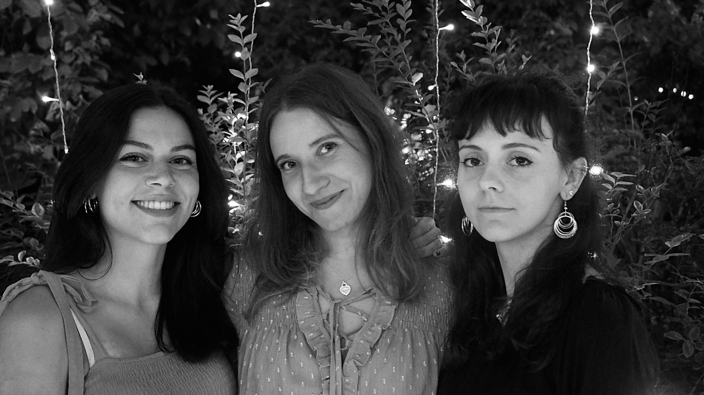

Hai voglia di viaggiare con la mente? Ascolta le nostre puntate!
Borderline è uno dei programmi di un bellissimo progetto gestito da giovani: Radio CAP.
La realtà della nostra radio (o meglio, webradio, perchè non siamo sulle frequenze FM) nasce nel marzo 2018 e conta una decina di membri. Da allora moltissime persone si sono aggiunte alla famiglia di Radio CAP, portando nuovi contenuti e nuove idee per quello che sarebbe stato il futuro della radio. Oggi infatti non sforniamo solo podcast, ma organizziamo eventi, cene, concerti e molto altro!
Ma torniamo a Borderline. Il nostro amato programma nasce con la radio, ed essendo uno dei primi podcast, siamo partite davvero da zero. Diciamo solo che all'inizio fare amicizia con l'attrezzatura non è stato affatto facile.
L'idea iniziale di Eleonora e Giuditta è stata parlare di viaggi, ma la struttura finale del podcast si è delineata in seguito: la puntata gira attorno ad un ospite che ha legami con la nazione scelta ( e quindi ne sa sicuramente più di noi, che invece provvediamo a cercare curiosità sul paese e le sue musiche tradizionali). In seguito, abbiamo introdotto anche alcune puntate "speciali" in cui ci diamo carta bianca sul tema da trattare, staccandoci dallo schema tradizionale del programma.
Circa un anno fa ci siamo accorte che avevamo bisogno di qualcosa di nuovo, un tocco di classe. Perciò seguendo la regola del "non c'è due senza tre" abbiamo accolto Sofia nel programma, che si è ripreso alla grande: ora abbiamo nuove idee, un nuovo logo, una pagina Instagram e un sito!
